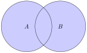
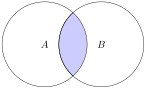
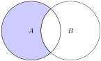
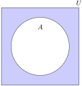

Skip to main content
Contents Index
Search Book
Search Results:
No results.
Readability settings Prev Up Next \( \newcommand{\MyTikzmark}[2]{
\tikz[overlay,remember picture,baseline] \node [anchor=base] (#1) {$#2$};}
\newcommand{\DrawVLine}[3][]{
\begin{tikzpicture}[overlay,remember picture]
\draw[shorten \lt =0.3ex, #1] (#2.north) -- (#3.south);
\end{tikzpicture}
}
\newcommand{\DrawHLine}[3][]{
\begin{tikzpicture}[overlay,remember picture]
\draw[shorten \lt =0.2em, #1] (#2.west) -- (#3.east);
\end{tikzpicture}
}
\newcommand{\lt}{<}
\newcommand{\gt}{>}
\newcommand{\amp}{&}
\definecolor{fillinmathshade}{gray}{0.9}
\newcommand{\fillinmath}[1]{\mathchoice{\colorbox{fillinmathshade}{$\displaystyle \phantom{\,#1\,}$}}{\colorbox{fillinmathshade}{$\textstyle \phantom{\,#1\,}$}}{\colorbox{fillinmathshade}{$\scriptstyle \phantom{\,#1\,}$}}{\colorbox{fillinmathshade}{$\scriptscriptstyle\phantom{\,#1\,}$}}}
\)
Section 6.1 Set Theory
In this section we review the set theory definitions of element and subset from
Section 1.2 . Then we introduce several definitions for operations on sets.
We have been using some of the set notation throughout the course. We review it here for convenience. We usually use capital letters for sets, such as
\(S\) or
\(A\text{.}\) If we want to talk about elements in a set
\(S\text{,}\) we use the notation
\(x\in S\text{.}\) We read this notation as “
\(x\) is in
\(S\) ” or “
\(x\) is an element of
\(S\text{.}\) ” If
\(x\) is not in
\(S\text{,}\) then we use the notation
\(x\notin S\text{.}\)
In general, if we use
\(P(x)\) to describe a property of
\(x\text{,}\) we use the notation
\begin{equation*}
\{x\in S : P(x)\}
\end{equation*}
and read the statement as "
\(x\) in
\(S\) such that
\(x\) has property
\(P\text{.}\) "
We gave an initial definition of subset in
Definition 1.2.2 , and introduced the notation for subset:
\(A\subseteq B\text{.}\) Now that we will be working with sets more formally, we give a more formal definition of a subset, which will be easier to use in proofs.
Definition 6.1.1 .
\(A\) is a
subset of
\(B\text{,}\) \(A\subseteq B\text{,}\) if for all
\(x\text{,}\) if
\(x\in A\) then
\(x\in B\text{.}\)
\(A\) is a not a subset of
\(B\text{,}\) \(A\nsubseteq B\text{,}\) if there exists
\(x\text{,}\) such that
\(x\in A\) and
\(x\notin B\text{.}\)
Definition 6.1.2 .
We say two sets are
equal ,
\(A=B\text{,}\) if
\(A\subseteq B\) and
\(B\subseteq A\text{.}\)
Definition 6.1.3 .
\(A\) is a
proper subset of
\(B\) if
\(A\subseteq B\) and
\(A\neq B\text{.}\)
Two important sets are the
universal set ,
\(U\text{,}\) which is the set of everything, and the
empty set ,
\(\emptyset\text{,}\) which is the set with nothing. The universal set depends on the context. For example, in calculus, the universal set is often the set of real numbers. In number theory, it could just be the integers. In computer science, it could be the set of sequences of 0 and 1. When dealing with abstract sets, we might want to define a convenient universal set.
We now give the element definitions for common set operations, along with the Venn diagrams for each of the sets.
Definition 6.1.4 .
The set
\(A\cup B\) is the
union of sets
\(A\) and
\(B\) where
\(x\in A\cup B\) if and only if
\(x\in A\) or
\(x\in B\text{.}\)
In set notation,
\(A\cup B=\{x\in U : x\in A \text{ or } x\in B\}\text{.}\)

Two overlapping circles, the left one labeled
\(A\text{,}\) the right one labeled
\(B\text{.}\) All the area inside the circles, including the overlapping area is shaded.
Figure 6.1.5. Venn diagram for \(A\cup B\)
Definition 6.1.6 .
The set
\(A\cap B\) is the
intersection of sets
\(A\) and
\(B\) where
\(x\in A\cap B\) if and only if
\(x\in A\) and
\(x\in B\text{.}\)
In set notation,
\(A\cap B=\{x\in U : x\in A \text{ and } x\in B\}\text{.}\)

Two overlapping circles, the left one labeled
\(A\text{,}\) the right one labeled
\(B\text{.}\) Only the overlapping area is shaded.
Figure 6.1.7. Venn diagram for \(A\cap B\)
Definition 6.1.8 .
The set
\(A-B\) is the
set difference of sets
\(A\) and
\(B\) where
\(x\in A-B\) if and only if
\(x\in A\) and
\(x\notin B\text{.}\)
In set notation,
\(A-B=\{x\in U : x\in A \text{ and } x\notin B\}\text{.}\)

Two overlapping circles, the left one labeled
\(A\text{,}\) the right one labeled
\(B\text{.}\) Only the area inside
\(A\) and not inside the overlapping section is shaded.
Figure 6.1.9. Venn diagram for \(A-B\) A common alternate notation for set difference is
\(A\setminus B\text{.}\)
Definition 6.1.10 .
The set
\(A^C\) is the
complement of set
\(A\) where
\(x\in A^C\) if and only if
\(x\notin A\text{.}\)
In set notation,
\(A^C=\{x\in U : x\notin A\}\text{.}\)

A square labeled
\(U\) containing a circle labeled
\(A\text{.}\) Only the area inside the square, but outside the circle is shaded.
Figure 6.1.11. Venn diagram for \(A^C\)
Example 6.1.12 . Operations on Sets.
Let
\(A=\{x\in \mathbb{R} : 0\leq x\leq 4\}\) and
\(B=\{x\in \mathbb{R} : -1< x < 1\}\text{.}\)
Note, these sets can also be defined with interval notation:
\(A=[0, 4], B=(-1, 1)\text{.}\)
Answer 1 . Answer 2 . Answer 3 . Answer 4 . Answer 5 .
\((-\infty, 0)\cup(4, \infty)\)
Activity 6.1.1 .
Let
\(A=\{1, 2, 3, 4, 5, 6\}\) and
\(B=\{2, 4, 6, 8, 10, 12\}\) and the Universal set
\(U=\{n\in\mathbb{Z}: 1\leq n\leq 12\}\text{.}\)
(a) (b) (c) (d) (e)
We can take the union or intersection of many sets using notation similar to summation notation:
\begin{equation*}
\bigcup_{i=1}^{n}A_i=A_1\cup A_2\cup\cdots \cup A_n
\end{equation*}
\begin{equation*}
\bigcap_{i=1}^{n}A_i=A_1\cap A_2\cap\cdots \cap A_n.
\end{equation*}
We can also take the intersection or union of infinitely many sets:
\begin{equation*}
\bigcup_{i=1}^{\infty}A_i=A_1\cup A_2\cup\cdots \cup A_n\cdots
\end{equation*}
\begin{equation*}
\bigcap_{i=1}^{\infty}A_i=A_1\cap A_2\cap\cdots \cap A_n\cdots
\end{equation*}
Activity 6.1.2 .
Let
\(A_i=\{1, 2, 3, \ldots i\}\text{.}\)
(a) Find
\(A_1, A_2, A_5,\) and
\(A_n\text{.}\)
(b) Find
\(\bigcup_{i=1}^{5}A_i\text{.}\)
(c) Find
\(\bigcap_{i=1}^{5}A_i\text{.}\)
(d) Find
\(\bigcup_{i=1}^{\infty}A_i\text{.}\)
(e) Find
\(\bigcap_{i=1}^{\infty}A_i\text{.}\)
Definition 6.1.13 .
The
power set of a set
\(A\) is the set of all subsets of
\(A\text{.}\) We denote it
\(\mathcal{P}(A)\) .
Example 6.1.14 . Power Set.
Let
\(A=\{1, 2\}\text{.}\) Find
\(\mathcal{P}(A)\text{.}\)
We need to find all the subsets of
\(\{1, 2\}\text{.}\) The subsets are the elements of
\(\mathcal{P}(A)\text{.}\)
The subsets are
\(\emptyset, \{1\}, \{2\}, \{1, 2\}\text{.}\) Thus,
\(\mathcal{P}(A)=\{\emptyset, \{1\}, \{2\}, \{1, 2\}\}\text{.}\)
Activity 6.1.3 .
Let
\(A=\{2, 4, 6\}\text{.}\) Find
\({\cal{P}}(A)\text{.}\)
Recall, in
Definition 1.2.6 , we defined the Cartesian product of two sets,
\(A\times B\text{:}\)
\begin{equation*}
A\times B=\{(a, b) : a\in A, b\in B\}.
\end{equation*}
Example 6.1.15 . Cartesian Product of Sets.
Let
\(A=\{1, 2, 3\}\) and
\(B=\{2, 4\}\text{.}\)
Find
\(A\times B\text{.}\)
Answer .
\(\{(1, 2), (1, 4), (2, 2), (2, 4), (3, 2), (3, 4)\}\)
Definition 6.1.16 .
We say two sets
\(A\) and
\(B\) are
disjoint if
\(A\cap B=\emptyset\text{.}\)
Definition 6.1.17 .
A set of subsets of a set \(B\text{,}\) \(\{A_1, A_2, \ldots, A_n\}\text{,}\) is a partition of \(B\) if
\(\bigcup_{i=1}^nA_i=B\text{,}\)
\(A_i\cap A_j=\emptyset\) whenever \(i\neq j\text{.}\)
What this really says is that a set of subsets will be a partition of
\(B\) if the union of the subsets is all of
\(B\text{,}\) and the subsets are
pairwise disjoint , meaning the intersection of any pair of sets is empty.
Example 6.1.18 . Partition.
Let
\(B=\{1, 2, 3, 4, 5, 6\}\text{.}\) Then let
\(A_1=\{1\}, A_2=\{2, 4, 6\}, A_3=\{3, 5\}\text{.}\) We can see that
\(\{A_1, A_2, A_3\}\) is a partition of
\(B\) since
\(A_1\cup A_2\cup A_3=B\) and the subsets have no elements in common, hence they are disjoint.
Now if we let
\(A_1=\{1, 2, 3, 4\}, A_2=\{2, 3, 4, 5, 6\}\text{.}\) We can see that
\(\{A_1, A_2\}\) is not a partition of
\(B\) since
\(A_1\cap A_2=\{2, 3, 4\}\neq\emptyset\text{.}\)
Activity 6.1.4 .
To prove
\(A\subseteq B\text{,}\) assume
\(x\in A\text{,}\) show
\(x\in B\text{.}\) Prove
\(\{6k: k\in \mathbb{Z}\}\subseteq\{3k: k\in \mathbb{Z}\}\text{.}\)
Let \(x\in \{6k: k\in \mathbb{Z}\}\text{.}\)
---
\(x=6k\) for some \(k\in \mathbb{Z}\text{.}\)
---
\(x=3(2k)\) where \(2k\in \mathbb{Z}\text{.}\)
---
Thus, \(x\in \{3k: k\in \mathbb{Z}\}\text{.}\)
---
Let \(x\in \{3k: k\in \mathbb{Z}\}\text{.}\)
#distractor
---
Thus, \(x\in \{6k: k\in \mathbb{Z}\}\text{.}\)
#distractor
Hint .
It might help to identify what you need to assume and what you need to show.
Activity 6.1.5 .
Find a counterexample to prove
\(\{3k: k\in \mathbb{Z}\}\nsubseteq\{6k: k\in \mathbb{Z}\}\text{.}\)
Reading Questions Check Your Understanding
1.
Let
\(A=\{2, 4, 6, 8\}, B=\{3, 4\}, C=\{1, 2, 4\}, D=\{0, 1\}\)
Match each set with its elements.
\(A\cap C\) \(\{2, 4\}\) \(B\cap D\) \(\emptyset\) \(A\cup C\) \(\{1, 2, 4, 6, 8\}\) \(B\cup D\) \(\{0, 1, 3, 4\}\) \(A-C\) \(\{6, 8\}\) \(B-D\) \(\{3, 4\}\) \(B\times D\) \(\{(3, 0), (3, 1), (4, 0), (4, 1)\}\) \(B\times B\) \(\{(3, 3), (3, 4), (4, 4), (4, 3)\}\) 2.
Let
\(B=\{3, 4\}, D=\{0, 1\}.\)
True or false:
\(B\times D=D\times B\text{.}\)
True.
False.
3.
Let
\(B=\{3, 4\}, D=\{0, 1\}.\)
True or false:
\(B-D=D-B\text{.}\)
True.
False.
4.
Let
\(A=\{2, 4, 6, 8\}, C=\{1, 2, 4\}.\)
True or false:
\(A\cup C= C\cup A\text{.}\)
True.
False.
5. Let
\(B=\{3, 4\}.\) Find
\(\mathcal{P}(B)\text{.}\)
Hint .
The elements of the power set are subsets of
\(B\text{.}\)
6. Let
\(A=\{2, 4, 6, 8\}.\) Give a partition of
\(A\text{.}\)
Hint .
Lots of subsets work, they just need to be disjoint and the union is all of
\(A\text{.}\)
Exercises Exercises
1. For each of the following determine if
\(A\subseteq B\text{.}\) Then determine if
\(B\subseteq A\text{.}\)
\(A=\{2, \{2\}, (\sqrt{2})^2\}, B=\{2, \{2\}, \{\{2\}\}\}\text{.}\)
\(A=\{\{1, 2\}, \{2, 3\}\}, B=\{1, 2, 3\}\text{.}\)
\(A=\{a, b, c\}, B=\{\{a\}, \{b\}, \{c\}\}\text{.}\)
\(A=\{\sqrt{16}, \{4\}\}, B=\{4\}\text{.}\)
\(A=\{x\in \mathbb{R}: \cos x \in \mathbb{Z}\}, B=\{x\in \mathbb{R}: \sin x \in \mathbb{Z}\}\text{.}\)
2. Complete the following sentences without using the symbols
\(\cup, \cap\text{,}\) or
\(-\text{.}\)
\(x\notin A\cup B\) if and only if ___.
\(x\notin A\cap B\) if and only if ___.
\(x\notin A- B\) if and only if ___.
3. Let
\(A=\{1, 3, 5, 7, 9\}\text{,}\) \(B=\{3, 6, 9\}\text{,}\) and
\(C=\{2, 4, 6, 8\}\text{.}\) Find each of the following:
4. Let the universal set be
\(\mathbb{R}\text{,}\) and let
\(A=\{x\in \mathbb{R}:0< x\leq 2\}\text{,}\) \(B=\{x\in \mathbb{R}:1\leq x< 4\}\text{,}\) and
\(C=\{x\in \mathbb{R}:3\leq x< 9\}\text{.}\) Find each of the following:
\(\displaystyle A\cup B\)
\(\displaystyle A\cap B\)
\(\displaystyle A\cup C\)
\(\displaystyle A\cap C\)
\(\displaystyle A^{C}\cap B^{C}\)
\(\displaystyle A^{C}\cup B^{C}\)
\(\displaystyle (A\cap B)^{C}\)
\(\displaystyle (A\cup B)^{C}\)
5. Determine whether each of the following are true or false.
\(\displaystyle \mathbb{Z}^+\subseteq \mathbb{Q}\)
\(\displaystyle \mathbb{R}^-\subseteq \mathbb{Q}\)
\(\displaystyle \mathbb{Q}\subseteq \mathbb{Z}\)
\(\displaystyle \mathbb{Z}^-\cup\mathbb{Z}^+= \mathbb{Z}\)
\(\displaystyle \mathbb{Z}^-\cap\mathbb{Z}^+= \emptyset\)
\(\displaystyle \mathbb{Q}\cap\mathbb{R}= \mathbb{Q}\)
\(\displaystyle \mathbb{Q}\cup\mathbb{Z}= \mathbb{Q}\)
\(\displaystyle \mathbb{Z}^+\cap\mathbb{R}= \mathbb{Z}^+\)
\(\displaystyle \mathbb{Z}\cup\mathbb{Q}= \mathbb{Z}\)
6. Let
\(A=\{a, b, c\}\text{,}\) \(B=\{b, c, d\}\text{,}\) and
\(C=\{b, c, e\}\text{.}\)
Find
\(A\cup(B\cap C)\text{,}\) \((A\cup B)\cap C\text{,}\) and
\((A\cup B)\cap (A\cup C)\text{.}\) Which of these sets are equal?
Find
\(A\cap(B\cup C)\text{,}\) \((A\cap B)\cup C\text{,}\) and
\((A\cap B)\cup (A\cap C)\text{.}\) Which of these sets are equal?
Find
\((A-B)-C\) and
\(A-(B-C)\text{.}\) Are these sets equal?
7. Determine if the following statements are true or false. Give a justification for your answer.
The number 0 is in
\(\emptyset\text{.}\)
\(\displaystyle \emptyset= \{\emptyset\}\)
\(\displaystyle \emptyset\in \{\emptyset\}\)
\(\displaystyle \emptyset\in \emptyset\)
8. Let
\(A_i=\{x\in \mathbb{R}: -i\leq x\leq i\}\) (the interval
\([-i, i]\) ) for all nonnegative integers
\(i\text{.}\)
Find
\(\bigcup_{i=0}^{4}A_i\text{.}\)
Find
\(\bigcap_{i=0}^{4}A_i\text{.}\)
Are
\(A_0, A_1, A_2\ldots\) pairwise disjoint? Explain.
Find
\(\bigcup_{i=0}^{n}A_i\text{.}\)
Find
\(\bigcap_{i=0}^{n}A_i\text{.}\)
Find
\(\bigcup_{i=1}^{\infty}A_i\text{.}\)
Find
\(\bigcap_{i=1}^{\infty}A_i\text{.}\)
9. Determine if the set of sets is a partition of the given set.
Is
\(\{\{a, d, e\}, \{b, c\}, \{d, f\}\}\) a partition of
\(\{a, b, c, d, e, f\}\text{?}\)
Is
\(\{\{w, x, v\}, \{u, y, q\}, \{p, z\}\}\) a partition of
\(\{p, q, u, v, w, x, y, z \}\text{?}\)
Is
\(\{\{5, 4\}, \{7, 2\}, \{1, 3, 4\}, \{6, 8\}\}\) a partition of
\(\{1, 2, 3, 4, 5, 6, 7, 8\}\text{?}\)
Is
\(\{\{3, 7, 8\}, \{2, 9\}, \{1, 4, 5\}\}\) a partition of
\(\{1, 2, 3, 4, 5, 6, 7, 8, 9\}\text{?}\)
Is
\(\{\{1, 5\}, \{4, 7\}, \{2, 8, 6, 3\}\}\) a partition of
\(\{1, 2, 3, 4, 5, 6, 7, 8\}\text{?}\)
10.
Let
\begin{equation*}
\begin{aligned}
A_0&=\{n\in\mathbb{Z}: n=4k \text{ for some } k\in \mathbb{Z}\}\\
A_1&=\{n\in\mathbb{Z}: n=4k+1 \text{ for some } k\in \mathbb{Z}\}\\
A_2&=\{n\in\mathbb{Z}: n=4k+2 \text{ for some } k\in \mathbb{Z}\}\\
A_3&=\{n\in\mathbb{Z}: n=4k+3 \text{ for some } k\in \mathbb{Z}\}
\end{aligned}
\end{equation*}
Is
\(\{A_0, A_1, A_2, A_3\}\) a partition of
\(\mathbb{Z}\text{?}\) Explain your answer.
11. Let
\(A=\{1, 2\}\) and
\(B=\{2, 3\}\text{.}\) Find
\({\cal{P}}(A\cap B)\text{.}\)
\({\cal{P}}(A\cup B)\text{.}\)
\({\cal{P}}(A\times B)\text{.}\)